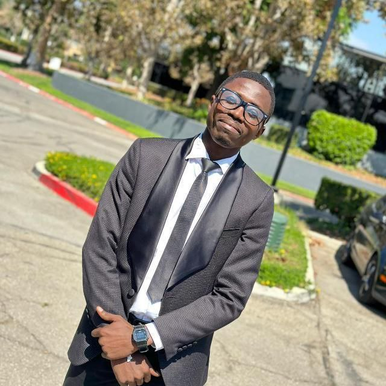

Current research
UCI Robot Ecology Lab
Graduate researcher working on networked systems and collective dynamics under the supervision of Professor Magnus Egerstedt.
Visit the lab →Researcher · Engineer · Educator
PhD researcher in Civil & Environmental Engineering at UC Irvine
I study transportation networks through mathematical modeling, nonlinear dynamics, control, and data analysis—connecting rigorous theory to mobility systems that work better for people.

About
I am a doctoral researcher at the University of California, Irvine, working at the intersection of transportation systems, dynamical systems, and applied mathematics. My current work develops and analyzes models of how travelers collectively choose routes—and how those choices shape congestion and network performance.
My training spans civil engineering, statistics, and mathematical sciences. I am particularly interested in translating ideas from nonlinear dynamics, consensus, optimization, and data analysis into tools for understanding real transportation networks.
I also enjoy teaching mathematics and statistics. Across university and secondary-school classrooms, I have supported learners in probability, statistical methods, calculus, differential equations, numerical methods, linear algebra, and real analysis.
Research
My work combines theoretical analysis with computational methods to study collective behavior and decision-making in transportation and other networked systems.
Current research
Graduate researcher working on networked systems and collective dynamics under the supervision of Professor Magnus Egerstedt.
Visit the lab →Doctoral affiliation
Affiliated doctoral student contributing to research in transportation systems, control, and traffic assignment.
Visit ITS Irvine →Graduate research
Developed a reduced-bias estimator of the extreme value index for Pareto-type distributions using random and approximate deterministic weight functions.
View research repository →Undergraduate research
Applied multiple linear regression to examine how exchange rates and other macroeconomic variables relate to lending interest rates.
View research repository →Publications
Recent work on nonlinear consensus and convergence in traffic-assignment dynamics.
Emmanuel Adjei, Brooks A. Butler, Wenlong Jin, and Magnus Egerstedt · Proceedings of the 2026 American Control Conference (ACC), pp. 4150–4156
Emmanuel Adjei, B. A. Butler, V. Pradhan, W. Jin, and M. Egerstedt · IEEE Conference on Decision and Control (CDC)
Projects
Beyond research, I develop educational software and clear, visual mathematics lessons for students.
Flutter · Firebase · Paystack
A cross-platform mobile app that digitizes West African examination questions, renders mathematical notation with LaTeX, and provides detailed solution reasoning for students in Ghana.
Mathematics education
Step-by-step undergraduate lessons on classifying and solving transport, heat, and wave equations.
Watch a lesson →YouTube animation
Structured, student-friendly videos aligned with the WAEC syllabus, covering logarithms, surds, algebra, and worked examination questions.
Visit the channel →Open portfolio
Repositories spanning transportation, mathematical modeling, statistics, scientific computing, and educational work.
Explore GitHub →Education
University of California, Irvine · Mathematical modeling, transportation systems, dynamical systems, and data analysis
University of California, Irvine · Machine learning, causal inference, stochastic processes, Bayesian statistics, and statistical computing
African Institute for Mathematical Sciences / University of Ghana · Differential equations, dynamical systems, numerical analysis, scientific computing, and complex networks
Kwame Nkrumah University of Science and Technology · Probability, statistics, analysis, differential equations, and numerical methods
Teaching experience
Service & recognition
Technical toolkit
Python · MATLAB · Mathematica · R · SQL
NumPy · SciPy · scikit-learn · PyTorch
LaTeX · Unix shell · Tableau · Power BI · Flutter · Firebase